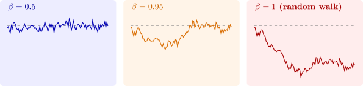

4.5 The autoregressive scheme
Definition 4.5.1. The first-order autoregressive scheme, AR(1), is \[ Y_t = \alpha + \beta Y_{t-1} + u_t , \] where the \(u_t\) are uncorrelated with mean \(0\) and variance \(\sigma ^2\), and \(u_t\) is uncorrelated with all earlier values of \(Y\). A process is covariance stationary if its mean and variance are constant over time and \(\Cov (Y_t, Y_{t+k})\) depends only on the lag \(k\), not on \(t\).
Substituting the equation into itself \(s\) times gives \[ Y_t = \alpha (1 + \beta + \dots + \beta ^{s}) + (u_t + \beta u_{t-1} + \dots + \beta ^{s}u_{t-s}) + \beta ^{s+1}Y_{t-s-1} . \] If the scheme started long ago and \(|\beta | < 1\), the last term vanishes as \(s \to \infty \) and \begin {equation} \label {eq:ma-inf} Y_t = \alpha (1 + \beta + \beta ^2 + \cdots ) + (u_t + \beta u_{t-1} + \beta ^2u_{t-2} + \cdots ) = \frac {\alpha }{1 - \beta } + \sum _{j=0}^\infty \beta ^ju_{t-j} . \end {equation} \(Y_t\) is the accumulation of all past shocks, each discounted geometrically by its age.
Theorem 4.5.2. If \(|\beta | < 1\), the AR(1) scheme (4.1) is covariance stationary with \begin {align*} E(Y_t) &= \frac {\alpha }{1 - \beta }, \qquad \Var (Y_t) = \gamma _0 = \frac {\sigma ^2}{1 - \beta ^2},\\ \gamma _k &= \Cov (Y_t, Y_{t+k}) = \beta ^k\gamma _0, \qquad \rho _k = \frac {\gamma _k}{\gamma _0} = \beta ^k, \qquad k = 0, 1, 2, \dots \end {align*}
If \(|\beta | \geq 1\) the series \(\alpha \sum \beta ^j\) does not converge and \(E(Y_t)\) does not exist for a process started in the infinite past.
Proof. The geometric series \(\sum \beta ^j\) converges to \(1/(1 - \beta )\) exactly when \(|\beta | < 1\), which gives the mean. The shocks are uncorrelated with common variance, so \(\Var (Y_t) = \sigma ^2\sum _{j\geq 0}\beta ^{2j} = \sigma ^2/(1 - \beta ^2)\). For the autocovariance, write \(Y_{t+k} - \mu = \sum _{i\geq 0}\beta ^iu_{t+k-i}\). The terms with \(i < k\) involve shocks after \(t\), uncorrelated with \(Y_t\); setting \(i = j + k\) in the rest, \[ \gamma _k = \Cov \Bigl (\sum _j\beta ^ju_{t-j},\ \sum _j\beta ^{j+k}u_{t-j}\Bigr ) = \sigma ^2\sum _{j\geq 0}\beta ^j\beta ^{j+k} = \beta ^k\frac {\sigma ^2}{1 - \beta ^2} . \] None of these depends on \(t\), so the process is covariance stationary. □
The autocorrelations decay geometrically: a shock’s influence fades by the factor \(\beta \) each period. The closer \(\beta \) is to one, the more persistent the process. At \(\beta = 1\) the process becomes the random walk with drift \(Y_t = \alpha + Y_{t-1} + u_t\). Starting from a fixed \(Y_0\), \(Y_t = Y_0 + \alpha t + \sum _{s=1}^t u_s\), with variance \(t\sigma ^2\), which grows without bound. A random walk has no fixed mean to return to, and it is not stationary. Figure 7 shows the difference. Whether an economic series behaves like the first panel or the last has large consequences for regression, and it is the subject of the section on unit roots.

Least squares for the AR(1) model
The least squares estimator \(b = \sum _t (Y_t - \bar Y)(Y_{t-1} - \bar Y_{-1})/\sum _t (Y_{t-1} - \bar Y_{-1})^2\), from regressing \(Y_t\) on \(Y_{t-1}\), has the form of Theorem 4.4.1 with \(X_t = Y_{t-1}\), but the pairs are no longer independent. The time-series versions of the law of large numbers and the central limit theorem replace independence by stationarity together with a condition that the dependence dies out, and the \(u_t\) by a martingale difference sequence. With them one obtains, for \(|\beta | < 1\) and independent identically distributed \(u_t\), \[ b \xrightarrow {p} \beta , \qquad \sqrt T(b - \beta ) \xrightarrow {d} N(0,\ 1 - \beta ^2) . \] The variance is the \(\sigma ^2/\Var (X)\) of Theorem 4.4.1(ii) with \(\Var (X) = \Var (Y_{t-1}) = \sigma ^2/(1 - \beta ^2)\). In finite samples \(b\) is biased towards zero. A classical approximation, due to Kendall and to Marriott and Pope, is \[ E(b) \approx \beta - \frac {1 + 3\beta }{T} . \] The bias is of order \(1/T\), while the standard deviation is of order \(1/\sqrt T\). In large samples the bias is negligible beside the sampling error, but in the short annual series common in macroeconomics it is not.
Questions on this section
Stuck on something here? Ask below and it stays attached to this topic.